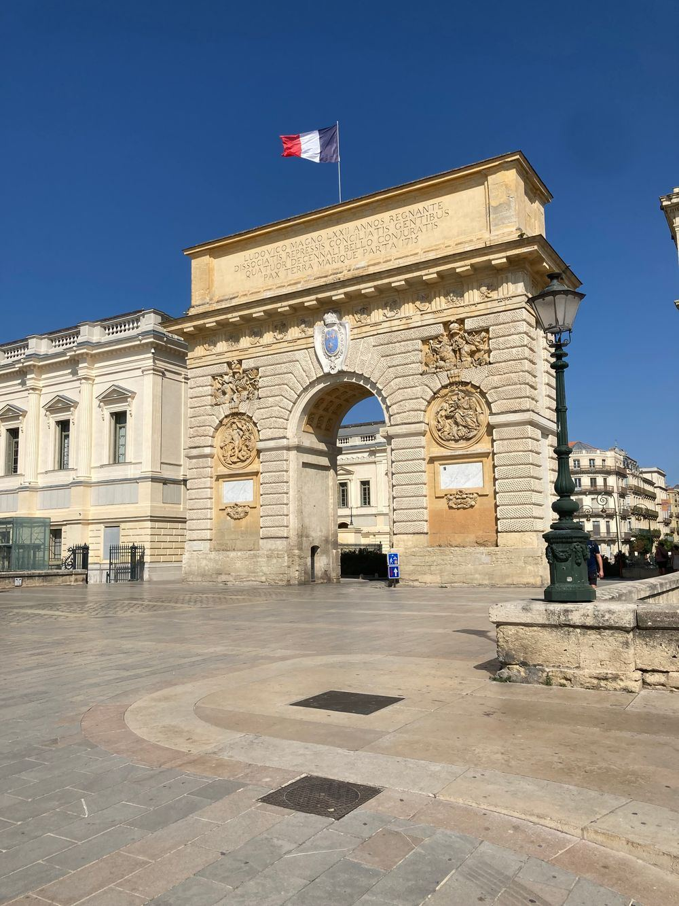

Vendre à Montpellier
Estimation par un conseiller, photos et annonce soignées, visites organisées et suivi du dossier jusqu'à la signature.
Nous contacterUne agence indépendante, à Montpellier comme à Béziers : vente, location, gestion locative et syndic de copropriété, avec un conseiller qui connaît votre dossier.
Agence de Montpellier : [ADRESSE À COMPLÉTER], 34000 Montpellier
 Montpellier
MontpellierMontpellier est une ville jeune, universitaire et en plein mouvement. Son centre historique, l'Écusson, ses quartiers contemporains et son réseau de tramway attirent étudiants, actifs, familles et investisseurs.
L'agence LOTIER Immobilier dispose d'une agence à Montpellier. Que vous vendiez un appartement du centre, que vous cherchiez un studio proche d'une ligne de tramway ou que vous confiiez un bien en gestion locative, un conseiller vous accompagne à chaque étape.

Estimation par un conseiller, photos et annonce soignées, visites organisées et suivi du dossier jusqu'à la signature.
Nous contacterSélection des candidats, bail, état des lieux, quittances et suivi du logement : gestion locative à partir de 39,99 € par mois.
Nous contacterGestion de copropriété : assemblées générales, comptes, entretien, travaux et relation avec les copropriétaires.
Nous contacterLe centre historique, piéton, avec ses ruelles, ses places et la place de la Comédie.
Un quartier néoclassique dessiné par Ricardo Bofill, entre perspectives et bords de Lez.
Un quartier récent tourné vers le Lez, avec programmes neufs, commerces et équipements.
Des secteurs résidentiels appréciés, au pied de l'aqueduc Saint-Clément.
Des quartiers animés et proches du centre, très recherchés par les étudiants et les jeunes actifs.
Écusson, Antigone, Port Marianne, Arceaux, tramway : un tour des quartiers de Montpellier avant d'y acheter ou de louer.
Lire l'articleL'Écusson, Antigone, Port Marianne, les Arceaux et Boutonnet figurent parmi les secteurs les plus demandés. Le bon choix dépend de votre projet : proximité du tramway, ambiance, budget, type de bien.
Les petites surfaces proches du tramway et des universités intéressent beaucoup d'investisseurs. Selon votre objectif (revenus, patrimoine, résidence future), un conseiller vous aide à comparer les secteurs et les types de logement.
Oui. LOTIER Immobilier assure la recherche du locataire, la rédaction du bail, l'état des lieux et le suivi du logement, à partir de 39,99 € par mois.
L'adresse de l'agence de Montpellier est à compléter. Vous pouvez dès maintenant nous joindre au 04 67 11 28 31 ou par e-mail à contact@lotier-immobilier.com.
Oui, nos conseillers accompagnent les projets de Béziers à Avignon, dont Montpellier et ses environs.
Un conseiller compare votre bien aux ventes récentes de son secteur et vous explique le prix du marché.
Ou appelez-nous : 04 67 11 28 31
Castelnau-le-Lez · Lattes · Pérols · Juvignac · Nîmes
Contact : 04 67 11 28 31 · contact@lotier-immobilier.com
Siège : 40 rue Française, 34500 Béziers